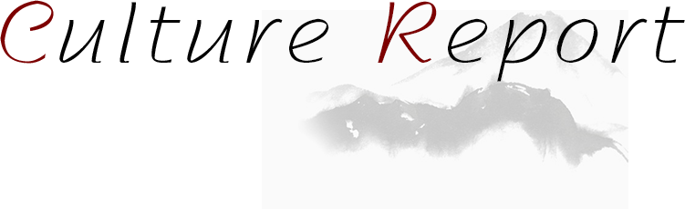
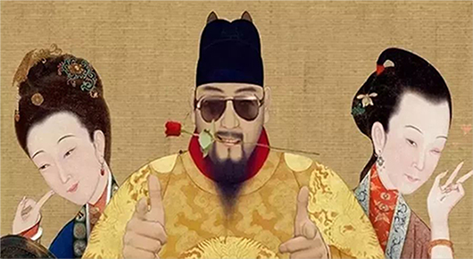
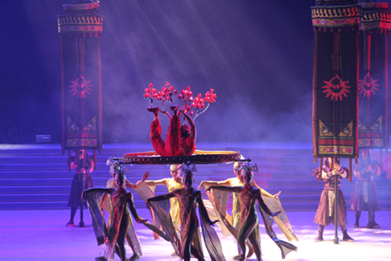
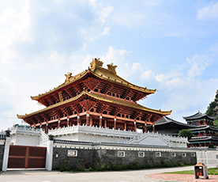
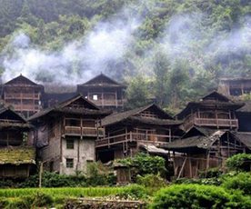
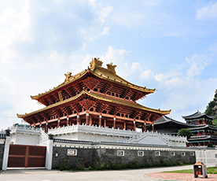
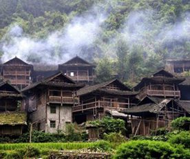
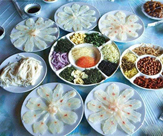
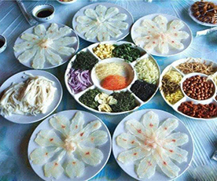
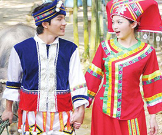

<
>
- 
Don't know how to use VR?What about the Forbidden City
-

"Sister liu" suite is played in America
- 
The 60th anniversary of the establishment of the autonomous region

- Information of "heritage and classic series exhibition"
- Gannan lecture hall special lecture begins
- "Poetry into the enterprise" helps to inherit traditional culture
- Langfang youth working committee held a poetry seminar
- Sanya held a symposium on intangible cultural heritage inheritance and protection


-
Building style
-
Cooking culture
-
Dress features
 
Guangxi guilin free building was built in the early wude years, tang dynasty, a large number of literati since the building fushi chanting, leaving a large number of famous works.
Founded in the early years of tang zhenguan, liuzhou wenmiao is composed of dacheng gate, dacheng hall, chongsheng temple, Ming lun hall and other main buildings, mainly built in song dynasty style
Guangxi ganlan house is praised as China's most local style of five traditional residential building forms, the history books on the "upper living people, the lower circle livestock" houses called "ganlan."

 
Every year on the third day of the third lunar month, the zhuang people use five-colored sticky rice to entertain guests, which is also used to sweep the ancestors of one of the offerings.
The original dongxiang people of oil tea, drinking oil tea can protect against cold and disease.The custom becomes natural, the dozen oil tea then becomes generation to pass along the national custom.
Heng county fish production is exquisite, amazing.It represents the highest standard of cooking technology and food culture in hengxian county and the highest standard of receiving guests.


The zhuang costume mainly consists of blue and black dress and short dress.Their general attire was a blue and black dress.
The pattern of pendants for both men and women is basically the same.The hats were all pointed, and the headscarf could only be wrapped .
The miao people like to sew clothes and trousers with stone blue cloth. This kind of cloth is self-knitting and self-dyeing.

Folk art master
Technological
shi xiangdong
Sculpture affectionateShi xiangdong, from guilin, guangxi, graduated from the sculpture department of the central academy of fine arts graduate class.Currently, he is the vice President of the school of modeling of guangxi art college.
Tan Xiangguang
She is a master of Chinese brocade craft, founded and managed the zhuang brocade folk handicraft workshop.Tan xiangguang studied under ms liang shuying, the second Chinese master of arts and crafts.
Li Hongyu
Craft artistLi hongyu is a woodcarving handicraft artist. Although he is only 30 years old, he won the title of "guangxi arts and crafts master" by virtue of his superb artistic attainments, becoming the youngest guangxi arts and crafts master at present.